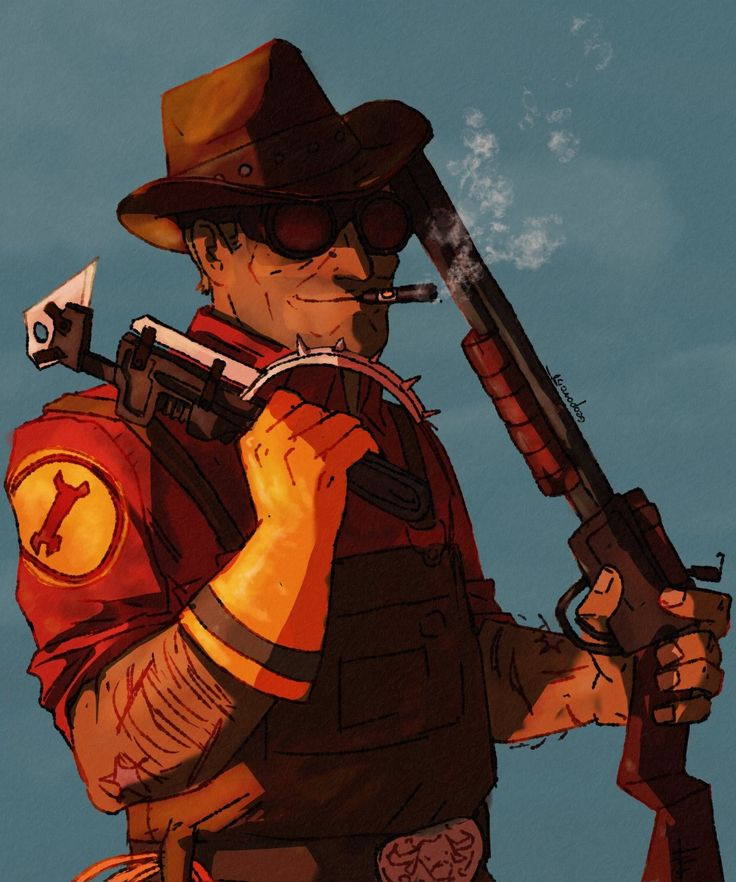

Origen: Bee Cave, Texas, EE. UU.
Salud: 125 HP
Velocidad: 100%
El Ingeniero , comúnmente abreviado como Engi , Engie o Engy , es un tejano de voz suave y afable originario de Bee Cave, Texas , EE. UU ., con interés en todo lo relacionado con la mecánica. Se especializa en la construcción y el mantenimiento de edificios que brindan apoyo a su equipo, en lugar de ser una clase de primera línea , lo que lo hace más adecuado para la defensa. Entre los diversos dispositivos del Ingeniero se incluyen la Torreta Centinela , una torreta automática que dispara a cualquier enemigo dentro de su alcance; el Dispensador , un dispositivo que restaura la salud y la munición de los compañeros de equipo cercanos; y los Teletransportadores que transportan rápidamente a los jugadores del punto A al punto B. Debido a que los ingeniosos dispositivos del Ingeniero están bajo la constante amenaza de explosivos y astutos espías enemigos , un buen Ingeniero debe mantener su equipo bajo vigilancia y en reparación constante con su llave inglesa . Cuando el Ingeniero necesita ensuciarse las manos, su trío de armas genéricas pero eficaces , junto con la ayuda de su útil hardware, lo hacen más que capaz de defenderse en un combate. Si es necesario, el Ingeniero incluso puede levantar y transportar edificios construidos para reubicarlos en posiciones más favorables.
